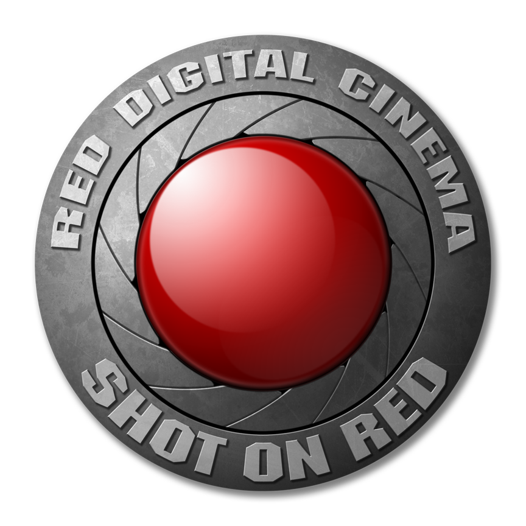
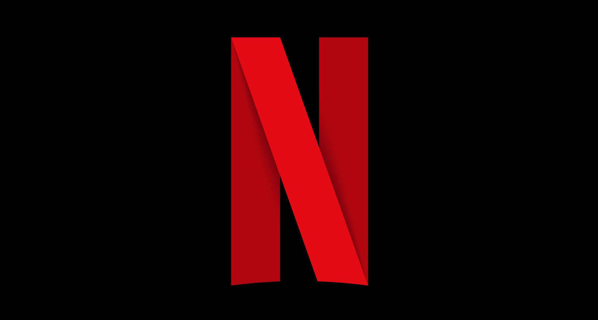

Inventer l'image de demain
CAM'ERA
Qui sommes nous ?
L’école CAM’ERA se démarque dans l’enseignement supérieur de l’audiovisuel (photographie, cinéma, création de contenu …) notamment pour ses deux formations :
- L’une sur les métiers des techniciens de l’audiovisuel
- L’autre est une formation innovante de « création et diffusion de contenu » uniquement proposée dans notre école.
Pour le parcours technique nous dispensons des cours approfondis dans les métiers techniques de l’audiovisuel : réalisation, ingénierie du son, montage et production. Nous couvrons donc l’ensemble des métiers de la production audiovisuelle avec un niveau d’excellence reconnu mondialement notamment par les plus gros studios de production tel que Netflix, Disney, Pixar.
En bref chez nous, vous pourrez apprendre à filmer, monter, cadrer, enregistrer du son etc…
avec un niveau professionnel.
Nous proposons également un deuxième parcours de formation « création et diffusion de contenu ». Innovante et totalement dans l’air du temps cette formation vous permettra d’acquérir les acquis nécessaires pour faire de la production de contenu pour internet (YouTube, Instagram et autres réseaux sociaux…), streaming (Twitch)).
Pendant nos cours nous couvrirons l’ensembles des facettes de la création de contenu c’est-à-dire devant la caméra mais aussi derrière la caméra !
Qui sont les acteurs de notre ecole ?
Pour faire sa renommée notre école s’appuie sur différents acteurs pour proposer un enseignement de qualité. Notamment par le biais de sponsors qui nous fournissent en matériel mais aussi grâce à notre réseau d’anciens élèves car comme vous le savez peut-être dans les métiers de l’audiovisuel les contacts sont très importants.
Effectivement un grand nombre de nos anciens étudiant diplômés s’inscrivent à notre programme anciens-étudiants et ainsi dans la continuité de leurs années passées ici, ils deviennent ambassadeurs de CAM’ERA. Cela permet de mettre en relation les anciens élèves (maintenant dans le monde du travail) aux nouveaux arrivants. Nous renforçons les liens avec ces ambassadeurs avec l’organisation d’atelier de type « table ronde » afin d’échanger et d’apprendre au contact de personnes ayant plus d’expérience.
Pour les élèves suivant la formation « création de contenu », il y a la possibilité de « featuring *» dans le cadre de vidéos pour pouvoir donner plus de visibilité a ces nouveaux créateurs.
Pour les élèves suivant la formation de techniciens l’avantage de ces rassemblements est de pouvoir échanger des contacts pour dans l’avenir pouvoir travailler sur de gros tournage.

Notre école dans le but de proposer un enseignement de qualité est sponsorisée par plusieurs
entreprises de matériel vidéo. Nous sommes notamment sponsorisées par RED qui nous fournis d’excellente camera professionnelle sur lesquelles les élèves pourront apprendre au mieux. Grâce à cette aide nous pouvons proposer à nos étudiant de travailler dans des studios de taille réelle munis de fond vert et d’équipements à la pointe de la technologie qui sont utilisés sur les plus gros plateaux de tournage à l’heure actuelle.

Nous avons également des partenaires tel que Netflix France qui nous permettent de développer des programmes pour accéder à des stages exclusifs au sein des locaux Netflix. Cela permet aux étudiants de découvrir comment s’organise le travail dans des sociétés de productions audiovisuelles de très grosse ampleur.
Ceci représente une opportunité qui n’a jamais été proposée auparavant parmi toutes les écoles de cinématographie confondues et permet aux étudiants d’acquérir une expérience professionnelle de prestige.
Mais rappelons que l’acteur le plus important de notre école c’est vous !
Si vous êtes passionné par l’audiovisuel que vous utilisez votre caméra au quotidien, que vous vous interrogez sur la manière dont le réalisateur a pensé la scène, si vous en avez assez de regarder les autres derrière votre écran quand vous pouvez vous-mêmes passer devant ou derrière la cam’era, cette école est plus que faite pour vous ! Rejoignez-nous !!!
*featuring : terme anglais utilisé pour designer une collaboration entre deux influenceurs notamment dans le cadre de vidéos